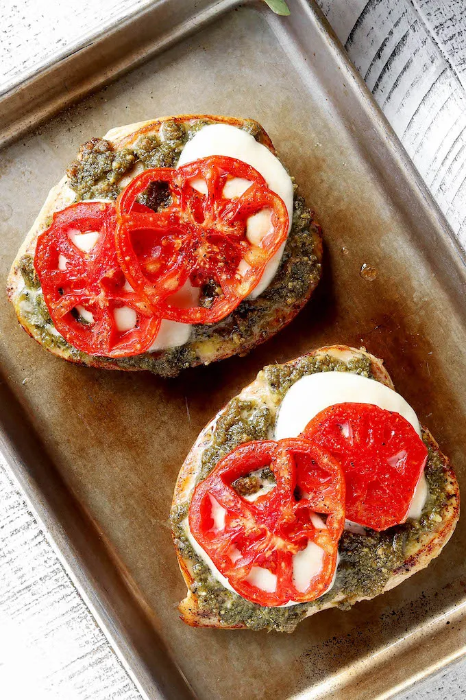

4 Ingredient Pesto Chicken Bake

Description
4 Ingredient Pesto Chicken Bake is healthy, simple, delicious, and requires just 5-minutes prep.
Juicy chicken topped with fresh pesto, melty mozzarella cheese, and vine ripened tomatoes.
This dish will make you appreciate the true beauty in simplicity.
Ingredients (makes 3 servings)
- 3 chicken breasts
- 1 6 oz. jar of basil pesto
- 2 medium tomatoes
- 3-6 slices mozzarella cheese
Instructions
- Preheat the oven to 350° F. Season chicken breasts liberally with salt and pepper.
- OPTIONAL STEP: While the oven is preheating you can heat some olive oil or butter in a skillet.
Once hot add the chicken breast and sear for 1-2 minutes on each side until caramelized.
The chicken should still be raw in the center.
- Arrange chicken breasts (seared or raw) onto a baking dish or rimmed baking sheet.
- Use a spoon to cover chicken with pesto.
- Top each chicken breast with 1 slice of mozzarella cheese and 2 sliced tomatoes.
- Bake for 20 - 30 minutes (time will vary depending on thickness of chicken and whether or not it has been seared),
or until chicken is no longer pink in the center.
Broil the chicken the final 2 minutes so that the cheese is bubbly and golden. Serve immediately.
Notes
Original recipe: Simply Sissom